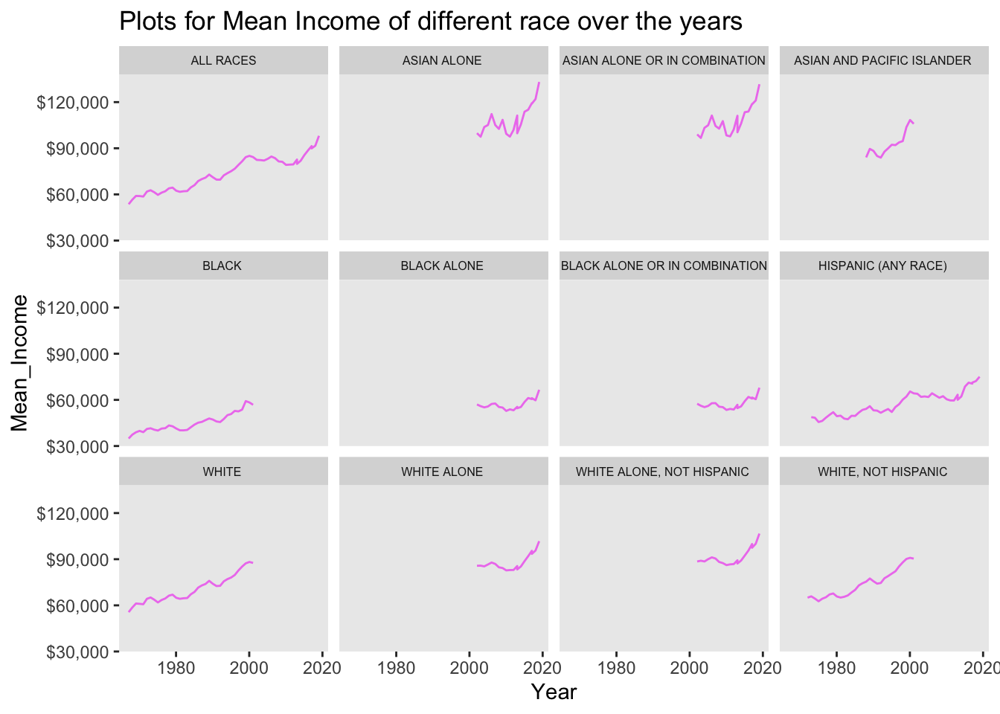
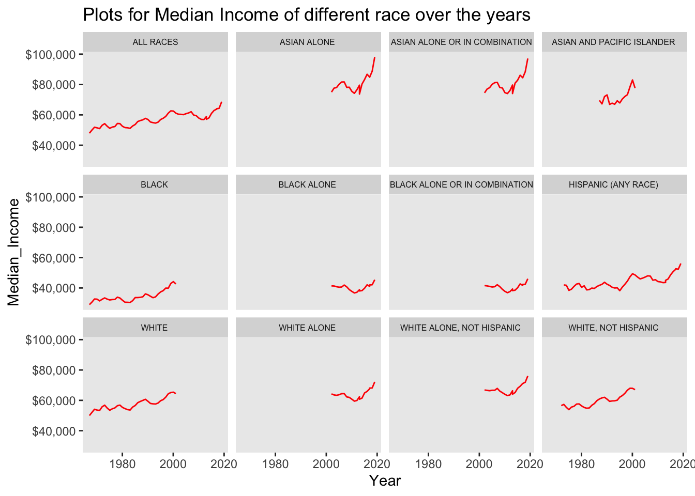
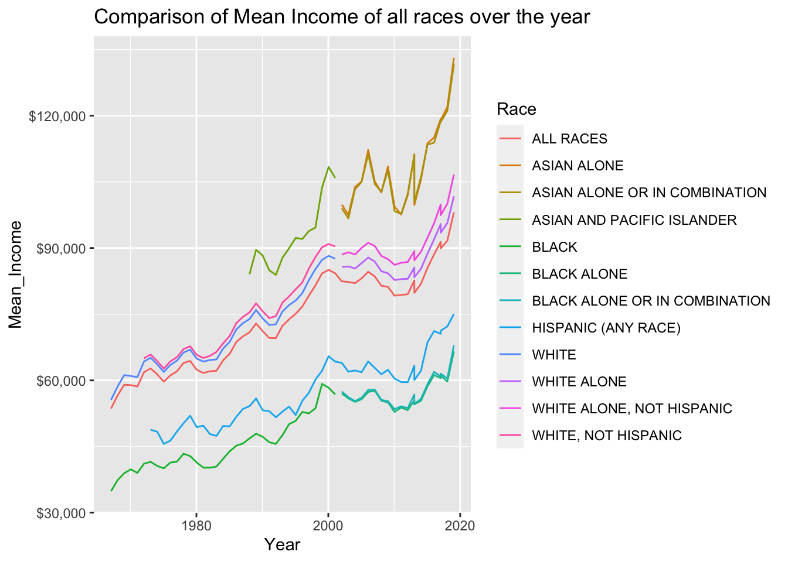
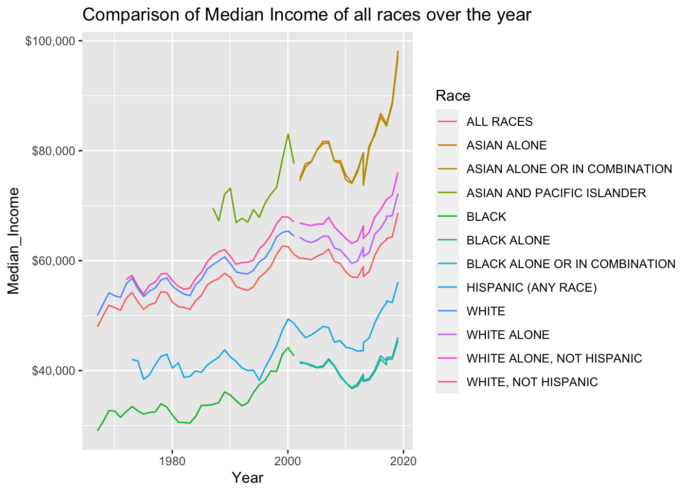

library(tidyverse)
library(readxl)
library(ggplot2)
library(tseries)
library(here)
knitr::opts_chunk$set(echo = TRUE, warning=FALSE, message=FALSE)Challenge 6
challenge_6
hotel_bookings
air_bnb
fed_rate
debt
usa_hh
abc_poll
Visualizing Time and Relationships
Challenge Overview
Today’s challenge is to:
- read in a data set, and describe the data set using both words and any supporting information (e.g., tables, etc)
- tidy data (as needed, including sanity checks)
- mutate variables as needed (including sanity checks)
- create at least one graph including time (evolution)
- try to make them “publication” ready (optional)
- Explain why you choose the specific graph type
- Create at least one graph depicting part-whole or flow relationships
- try to make them “publication” ready (optional)
- Explain why you choose the specific graph type
R Graph Gallery is a good starting point for thinking about what information is conveyed in standard graph types, and includes example R code.
(be sure to only include the category tags for the data you use!)
Read in data
Read in one (or more) of the following datasets, using the correct R package and command.
- debt ⭐
- fed_rate ⭐⭐
- abc_poll ⭐⭐⭐
- usa_hh ⭐⭐⭐
- hotel_bookings ⭐⭐⭐⭐
- air_bnb ⭐⭐⭐⭐⭐
dataset <- here("posts","_data","USA Households by Total Money Income, Race, and Hispanic Origin of Householder 1967 to 2019.xlsx") %>%
read_excel(skip=5, n_max = 351,
col_names = c("Year", "Population", "del","Income_1", "Income_2", "Income_3", "Income_4","Income_5","Income_6","Income_7","Income_8","Income_9","Median_Income", "Median_error","Mean_Income", "Mean_error"))
dataset# A tibble: 351 × 16
Year Popul…¹ del Incom…² Incom…³ Incom…⁴ Incom…⁵ Incom…⁶ Incom…⁷ Incom…⁸
<chr> <chr> <dbl> <dbl> <dbl> <dbl> <dbl> <dbl> <dbl> <dbl>
1 ALL RA… <NA> NA NA NA NA NA NA NA NA
2 2019 128451 100 9.1 8 8.3 11.7 16.5 12.3 15.5
3 2018 128579 100 10.1 8.8 8.7 12 17 12.5 15
4 2017 2 127669 100 10 9.1 9.2 12 16.4 12.4 14.7
5 2017 127586 100 10.1 9.1 9.2 11.9 16.3 12.6 14.8
6 2016 126224 100 10.4 9 9.2 12.3 16.7 12.2 15
7 2015 125819 100 10.6 10 9.6 12.1 16.1 12.4 14.9
8 2014 124587 100 11.4 10.5 9.6 12.6 16.4 12.1 14
9 2013 3 123931 100 11.4 10.3 9.5 12.5 16.8 12 13.9
10 2013 4 122952 100 11.3 10.4 9.7 13.1 17 12.5 13.6
# … with 341 more rows, 6 more variables: Income_8 <dbl>, Income_9 <dbl>,
# Median_Income <dbl>, Median_error <dbl>, Mean_Income <chr>,
# Mean_error <chr>, and abbreviated variable names ¹Population, ²Income_1,
# ³Income_2, ⁴Income_3, ⁵Income_4, ⁶Income_5, ⁷Income_6, ⁸Income_7Briefly describe the data
This dataset describes the income statistics of various races over the years. The data shows what percentage of people fall under each income category i.e ranging from under $15,000 to $200,000 per year. The mean and median of the income is also calculated in the columns 13 and 15. The statistics are calculated all races combine and also separate for different races.
Tidy Data (as needed)
Is your data already tidy, or is there work to be done? Be sure to anticipate your end result to provide a sanity check, and document your work here.
There are few unnecessary columns in the data like Total, which has to be deleted. A new column which represents the race has to mutated to the data. Superscripts have to be removed from the year column.
household <- dataset %>%
mutate(Race = case_when(is.na(Population) ~ Year), .before = Year) %>% #Created a new column race
fill(Race, .direction = "down") %>% #filled the value in the race column
separate(Year, into=c("Year", "del"), sep=" ")%>% #Removing the extra characters in the Year column
select(!contains("del")) %>% #deleting unecessary columns
drop_na() #dropping null values if any
household$Race <- gsub('[0-9]+', '', household$Race) #Removing extra characters in the Race column
household# A tibble: 339 × 16
Race Year Popul…¹ Incom…² Incom…³ Incom…⁴ Incom…⁵ Incom…⁶ Incom…⁷ Incom…⁸
<chr> <chr> <chr> <dbl> <dbl> <dbl> <dbl> <dbl> <dbl> <dbl>
1 ALL RA… 2019 128451 9.1 8 8.3 11.7 16.5 12.3 15.5
2 ALL RA… 2018 128579 10.1 8.8 8.7 12 17 12.5 15
3 ALL RA… 2017 127669 10 9.1 9.2 12 16.4 12.4 14.7
4 ALL RA… 2017 127586 10.1 9.1 9.2 11.9 16.3 12.6 14.8
5 ALL RA… 2016 126224 10.4 9 9.2 12.3 16.7 12.2 15
6 ALL RA… 2015 125819 10.6 10 9.6 12.1 16.1 12.4 14.9
7 ALL RA… 2014 124587 11.4 10.5 9.6 12.6 16.4 12.1 14
8 ALL RA… 2013 123931 11.4 10.3 9.5 12.5 16.8 12 13.9
9 ALL RA… 2013 122952 11.3 10.4 9.7 13.1 17 12.5 13.6
10 ALL RA… 2012 122459 11.4 10.6 10.1 12.5 17.4 12 13.9
# … with 329 more rows, 6 more variables: Income_8 <dbl>, Income_9 <dbl>,
# Median_Income <dbl>, Median_error <dbl>, Mean_Income <chr>,
# Mean_error <chr>, and abbreviated variable names ¹Population, ²Income_1,
# ³Income_2, ⁴Income_3, ⁵Income_4, ⁶Income_5, ⁷Income_6, ⁸Income_7Are there any variables that require mutation to be usable in your analysis stream? For example, do you need to calculate new values in order to graph them? Can string values be represented numerically? Do you need to turn any variables into factors and reorder for ease of graphics and visualization?
Added a new column race while tidying up the data, which is useful for facet_wrap function to plot different graphs on basis of the values in the Race column. Converting the all the columns to numeric for ease during plotting the graphs. Converted the Year column to date format
Document your work here.
#Converting all the columns except Race and Year to numeric for better
for (i in names(household)){
if (i == "Race"){
next
}
else if (i == "Year"){
next
}
else{
household[i] <- sapply(household[i],as.numeric)
}
}
#converting year to date format
household$Year <- as.Date(as.character(household$Year), format = "%Y")
class(household$Year)[1] "Date"class(household$Mean_Income)[1] "numeric"Time Dependent Visualization
By plotting the Mean_income of various races over the time (years), we can see that there is an increasing trend of the mean over the years and so is the Median. The Mean income ranged between $30,000 to $120,000 whereas median ranged between $50,000 to $100,000.
#Mean Income
ggplot(data = household, aes(Year, Mean_Income)) +
geom_line(color="violet") +
scale_y_continuous(labels = scales::dollar_format()) +
labs(title = "Plots for Mean Income of different race over the years") +
facet_wrap(~ Race) +
theme(
strip.text = element_text(size = 6),
panel.grid.minor = element_blank(), #removes minor grid lines
panel.grid.major = element_blank())
#Median Income
ggplot(data = household, aes(Year, Median_Income)) +
geom_line(color="red") +
scale_y_continuous(labels = scales::dollar_format()) +
labs(title = "Plots for Median Income of different race over the years") +
facet_wrap(~ Race) +
theme(
strip.text = element_text(size = 6),
panel.grid.minor = element_blank(), #removes minor grid lines
panel.grid.major = element_blank())
Visualizing Part-Whole Relationships
In the below comparison graph of mean and median income of various races over the years, we ca refer that the asian community has logged the highest mean and median income. Least income is registered by the black community.
#Mean_income Plot
ggplot(data = household, aes(x = Year, y = Mean_Income, col = Race)) +
geom_line()+
scale_y_continuous(labels = scales::dollar_format()) +
labs(title = "Comparison of Mean Income of all races over the year")
#Median_income Plot
ggplot(data = household, aes(x = Year, y = Median_Income, col = Race)) +
geom_line()+
scale_y_continuous(labels = scales::dollar_format()) +
labs(title = "Comparison of Median Income of all races over the year")